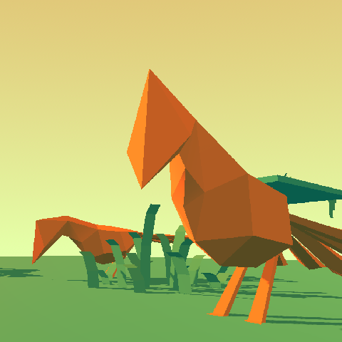

Portfolio page for Lumi Virtanen

Virtual Birdcage
Virtual birdcage to show off a custom volumetric pathfinding solution programmed in c++. The pathfinding alogirthm used is a custom version of JPS, adapted to work in a three-dimensional dataset.
The technical aspects of the pathfinding proccess were programmed as an extension to Godot using its official c++ bindings.
The path following and obstacle avoidance behaviour of the bird npcs was scripted in GDScript.
All assets used were created by me from scratch, except for the grass, hanging moss, and rock models, which come from Kenney's free asset pack.
No generative AI was used in the creation of any of the assets or code involved.